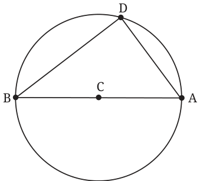
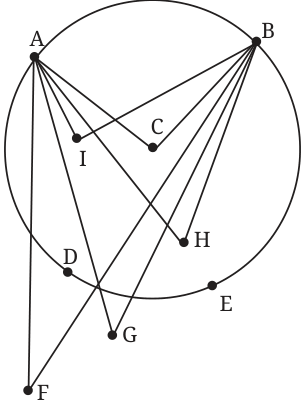
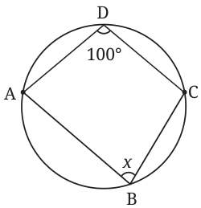

<!DOCTYPE html>
<html lang="en">
<head>
<meta charset="UTF-8">
<meta name="viewport" content="width=device-width,initial-scale=1">
<title>Exercise 5.6 — Im Up and Down and Round and Round</title>
<meta name="description" content="Class 9 Mathematics · Im Up and Down and Round and Round · Exercise 5.6">
<link rel="icon" href="data:image/svg+xml,<svg xmlns='http://www.w3.org/2000/svg' viewBox='0 0 100 100'><text y='.9em' font-size='90'>📘</text></svg>">
<link rel="stylesheet" href="../../../assets/book.css">
<link rel="stylesheet" href="https://cdn.jsdelivr.net/npm/katex@0.16.11/dist/katex.min.css" crossorigin="anonymous">
</head>
<body>
<header class="topbar">
<div class="topbar-in">
  <div class="crumb">
    <span class="c1"><a href="../../../index.html">Library</a> · <a href="../../index.html">Class 9 Mathematics</a></span>
    <span class="c2">Im Up and Down and Round and Round · Exercise 5.6</span>
  </div>
  <a class="tb-btn" data-nav="prev" href="../../05-im-up-and-down-and-round-and-round/14-angles-subtended-by-an-arc-5.7/index.html" title="5.7 Angles Subtended by an Arc">←</a>
  <details class="drawer"><summary class="tb-btn" title="Sections in this chapter">☰</summary>
<div class="drawer-panel"><div class="dh">Im Up and Down and Round and Round</div><a href="../01-chapter-opener/index.html">Chapter opener</a><a href="../02-definitions-5.1/index.html">5.1 Definitions</a><a href="../03-symmetries-of-a-circle-5.2/index.html">5.2 Symmetries of a Circle</a><a href="../04-how-many-circles-5.3/index.html">5.3 How Many Circles?</a><a href="../05-exercise-5.1/index.html">Exercise 5.1</a><a href="../06-chords-and-the-angles-they-subtend-5.4/index.html">5.4 Chords and the Angles They Subtend</a><a href="../07-exercise-5.2/index.html">Exercise 5.2</a><a href="../08-midpoints-and-perpendicular-bisectors-of-chords-5.5/index.html">5.5 Midpoints and Perpendicular Bisectors of Chords</a><a href="../09-exercise-5.3/index.html">Exercise 5.3</a><a href="../10-distance-of-chords-from-the-centre-5.6/index.html">5.6 Distance of Chords from the Centre</a><a href="../11-exercise-5.4/index.html">Exercise 5.4</a><a href="../12-which-of-the-two-unequal-chords-is-farther-from-the-5.6.1/index.html">5.6.1 Which of the two unequal chords is farther from the</a><a href="../13-exercise-5.5/index.html">Exercise 5.5</a><a href="../14-angles-subtended-by-an-arc-5.7/index.html">5.7 Angles Subtended by an Arc</a><a href="../15-exercise-5.6/index.html" aria-current="page">Exercise 5.6</a><a href="../16-concyclicity-of-points-5.8/index.html">5.8 Concyclicity of Points</a></div></details>
  <a class="tb-btn" data-nav="next" href="../../05-im-up-and-down-and-round-and-round/16-concyclicity-of-points-5.8/index.html" title="5.8 Concyclicity of Points">→</a>
  <button class="tb-btn" data-theme-toggle title="Toggle light / dark" aria-label="Toggle light or dark theme">◐</button>
</div>
<div class="progress"><span style="width:63.7%"></span></div>
</header>
<main class="wrap">
<div class="sec-head">
  <p class="eyebrow"><a href="../index.html">Chapter 5 · Im Up and Down and Round and Round</a></p>
  <h1>Exercise 5.6</h1>
  <p class="sec-meta">Textbook pages 19–20 · 7 figures</p>
</div>
<article class="prose">
<p>Corollary: The angle subtended by a diameter at any point on the circle is \(90 ^{\circ}\) .</p>
<figure class="fig wide"></figure>
<figure class="fig"></figure>
<p>Why is this true? Let AB be a diameter (Fig. 5.24). We must show that \(\angle ADB\) is \(90 ^{\circ}\) . The arc from A to B we take is the arc not containing D. What is the angle subtended by that arc at C? We have to move from A along that arc till we reach B. So, the angle subtended is \(\angle ACB\), a straight angle, \(180 ^{\circ}\) . Hence, Fig. \(5.24 \angle ADB = \frac{1}{2} \angle ACB = 90 ^{\circ}\) .</p>
<figure class="fig"><figcaption>Fig. 5.25: Points and the chord</figcaption></figure>
<p>This fact that the angles in the same arc segment are all equal is a beautiful fact that distinguishes the circle from all other shapes. In Fig. 5.25, the angles that arc AB subtends at the points F, G outside the circle are different. For the points inside the circle, \(\angle AIB\), \(\angle ACB\) and \(\angle AHB\) are all different. But for all points P on arc AB, the subtended angles are the same. Thus, for points D, E, \(\angle ADB = \angle AEB\).</p>
<figure class="fig"></figure>
<ul class="qlist">
<li><span class="mk">1.</span><span class="lt">In a circle with centre O, the central angle AOB is \(60 ^{\circ}\) . If the radius</span></li>
</ul>
<p>of the circle is 12 cm, what is the length of the chord AB?</p>
<ul class="qlist">
<li><span class="mk">2.</span><span class="lt">Let A and B be two points on a circle with centre O.</span></li>
<li><span class="mk">(i)</span><span class="lt">Are there points X, Y on the circle, on the same side of AB,</span></li>
</ul>
<p>such that \(\angle AXB\) is different from \(\angle AYB\)?</p>
<figure class="fig side-fig"></figure>
<ul class="qlist">
<li><span class="mk">(ii)</span><span class="lt">Is it true that if \(\angle AXB = \angle AYB\), then X</span></li>
</ul>
<p>and Y lie on the same side of the circle?</p>
<ul class="qlist">
<li><span class="mk">(iii)</span><span class="lt">If \(\angle AXB = \angle AYB\), and X and Y do not lie</span></li>
</ul>
<p>on the circle, does the circle through A, B and X also pass through Y?</p>
<ul class="qlist">
<li><span class="mk">3.</span><span class="lt">Find x in Fig. 5.26.</span></li>
</ul>
<p class="caption">Fig. 5.26</p>
</article>
<nav class="pager"><a class="" data-nav="prev" href="../../05-im-up-and-down-and-round-and-round/14-angles-subtended-by-an-arc-5.7/index.html"><span class="dir">← Previous</span><span class="t">5.7 Angles Subtended by an Arc</span><span class="ch">Im Up and Down and Round and Round</span></a><a class="nx" data-nav="next" href="../../05-im-up-and-down-and-round-and-round/16-concyclicity-of-points-5.8/index.html"><span class="dir">Next →</span><span class="t">5.8 Concyclicity of Points</span><span class="ch">Im Up and Down and Round and Round</span></a></nav>
</main><footer class="site">Generated from the source textbook PDFs · text, figures and exercises belong to their respective publishers.</footer><script defer src="https://cdn.jsdelivr.net/npm/katex@0.16.11/dist/katex.min.js" crossorigin="anonymous"></script>
<script defer src="https://cdn.jsdelivr.net/npm/katex@0.16.11/dist/contrib/auto-render.min.js" crossorigin="anonymous"
  onload="renderMathInElement(document.body,{delimiters:[
    {left:'\\(',right:'\\)',display:false},
    {left:'$$',right:'$$',display:true},
    {left:'\\[',right:'\\]',display:true}],throwOnError:false,ignoredTags:['script','noscript','style','textarea','pre','code']})"></script>
<script src="../../../assets/book.js"></script>
<script defer src="../../../../assets/search.js"></script>
</body>
</html>
